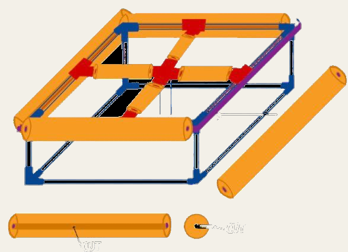
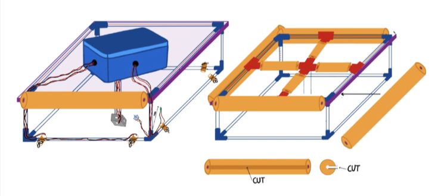
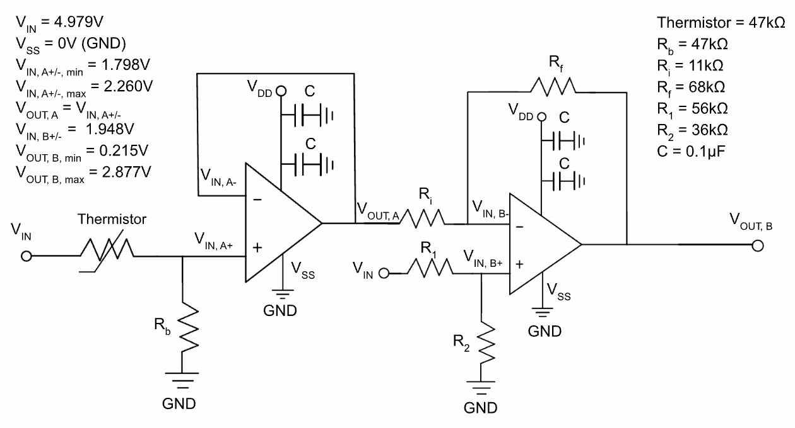
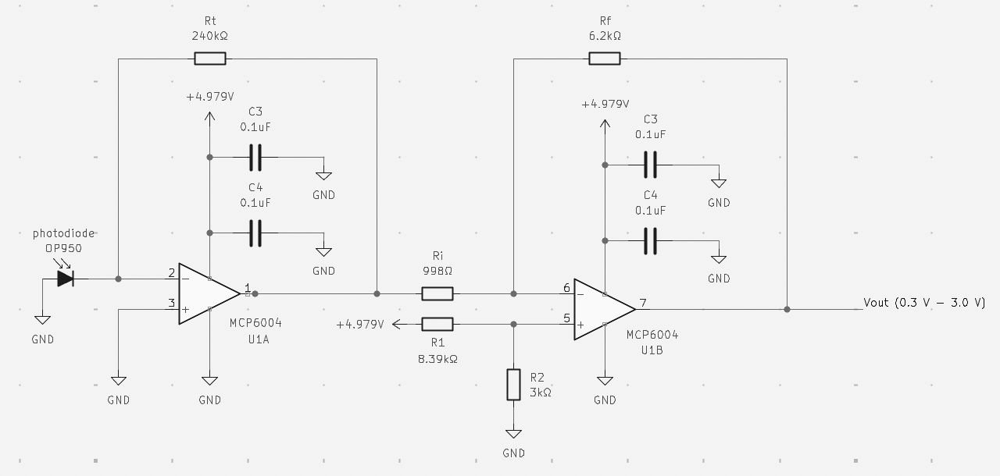
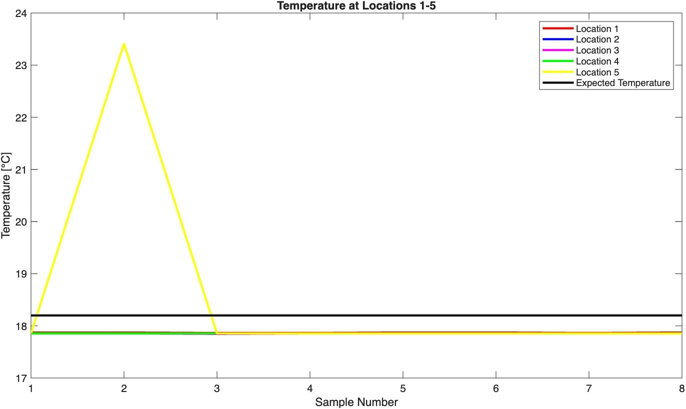
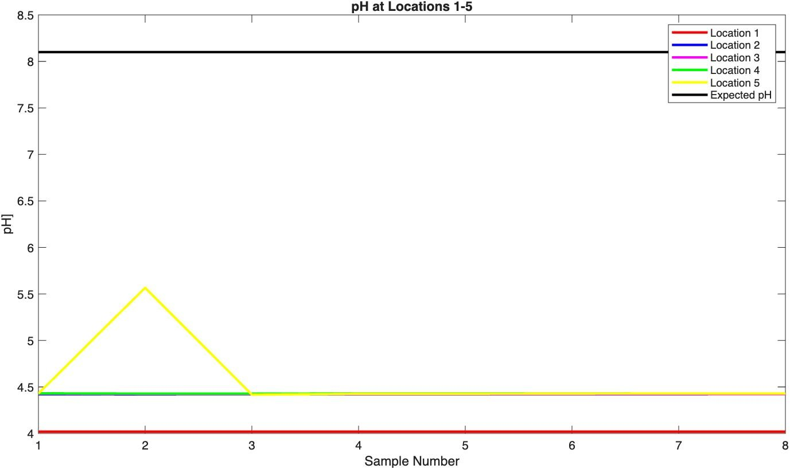
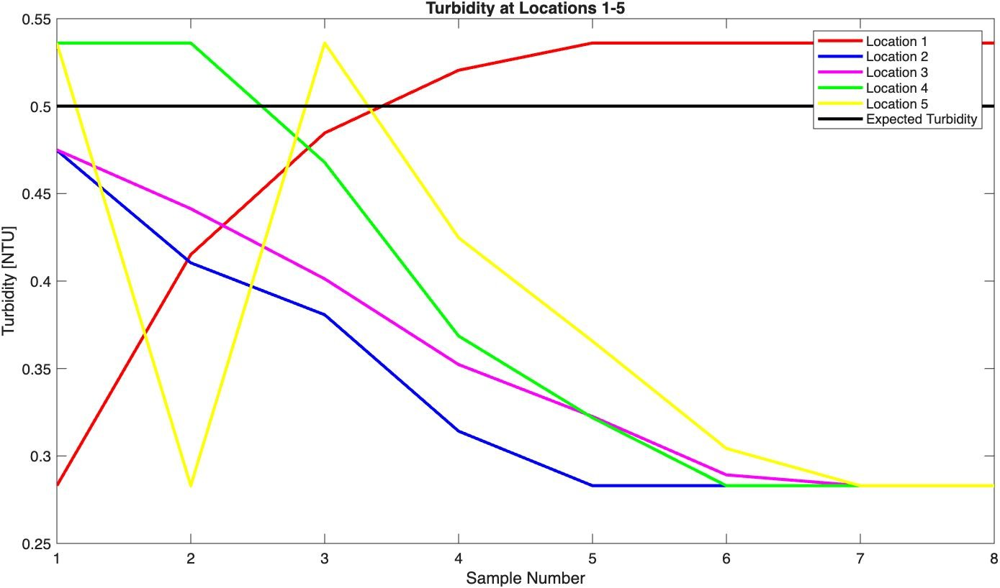

A robot that floated
Engineering 80, Harvey Mudd, spring 2026
Baby Beach, Dana Point
With Emily Bersin, Anna Chen and TJ Kidd
We built a surface robot to measure the sea at five points of a beach in Dana Point: six motors, and three sensors about 15 cm down. Two of the three sensors got the water wrong.

The robot
The frame was a floating box of PVC pipe, with an upper platform and a lower mesh, so the sensing structure stayed under water while the robot stayed afloat. The waterproof electronics box sat in the middle of the top platform, to spread the weight evenly and keep the cables short.
The turbidity sensor pointed down through the platform inside a length of PVC pipe, with its opening facing the direction of travel so fresh water kept flowing past it.


The circuits
Each sensor needed its own amplifier to turn a tiny signal into something the Teensy could read: an inverting offset amplifier with a buffer for the thermistor, a non-inverting pair for the pH probe, and for turbidity a 555 timer pulsing an infrared diode, read by a photodiode through a transimpedance amplifier.


What the sea said
The robot did everything we asked of it. It floated, followed its path, stopped at each location and logged every sample.
The thermistor agreed with the sea: an average of 17.86 °C, less than half a degree from the 18.2 °C we measured by hand. The other two did not. The pH sensor read three to four points low, and the turbidity sensor read between 0.28 and 0.54 NTU, where a classmate's sample of the same water measured 13.3.



What I learned
The sensors were not broken. They had been calibrated in fresh water, and the sea is not fresh water: salt changes how a thermistor and a pH probe behave, and our turbidity amplifier had so much gain that it saw almost nothing at all.
The robot worked. The lesson was about calibration: test the whole sensor, mounted, in the water it will actually meet.
Thanks to Professors Helms, Mohanty, Sinopoli and Yang, to Lynn and Xavier, and to Angie Zhou and Spencer Michaelson for sharing their measurements of the water.